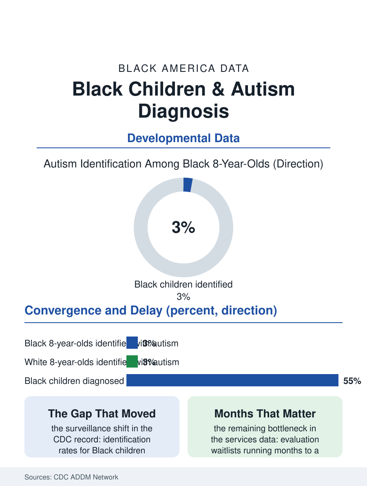

Black Public Health
Found Earlier: Black Children and Autism Diagnosis
Autism identification for Black children finally converged with white children's in federal surveillance, after decades of later diagnosis. The autism file.

Autism diagnosis is a race against a developmental clock: the earlier a child is identified, the earlier therapies begin, and the research is settled that early therapy changes trajectories. For most of the condition's measured history, Black children were diagnosed years later than white children, and misdiagnosed with other conditions first. The gap has narrowed in the most recent federal surveillance, one of the genuine good-news trends in this atlas, and the file now asks what closed it and what remains. This article reads the autism file.
The Surveillance Turn
The Centers for Disease Control and Prevention's monitoring network, which reads the health and school records of eight-year-olds across study sites, tracked the disparity for decades: Black children identified later, at lower rates, and with higher rates of co-occurring intellectual disability recorded, a signature of a system that found children only when their needs became impossible to miss. In the network's most recent cycles the identification rates for Black children met and in some site reports exceeded those for white children, a convergence the agency attributes substantially to improved screening in the communities and clinics serving Black families. The age gap, though, has closed more slowly than the rate gap: median age of first diagnosis still runs months later for Black children in several of the network's analyses, and those months are the expensive currency of the file, because the intervention literature prices early hours highly. The misdiagnosis pathway persists in the clinical studies as well: Black children presenting with the same developmental picture are more likely to collect conduct or adjustment labels first, diagnoses that route them toward discipline systems rather than developmental services, doubling the cost of the delay.
Screening Where Children Actually Are
The machinery that narrowed the gap is identifiable in the program record. Universal developmental screening at the eighteen and twenty-four month pediatric visits, once the recommendation and now increasingly the practice, replaced the referral system that depended on a parent knowing what to demand. Screening tools were translated, validated across populations, and embedded in the clinics, federally qualified health centers and WIC-adjacent practices, where Black children actually receive care. School systems added their own net through Child Find obligations and preschool screening, and the advocacy organizations built by Black parents of autistic children professionalized the family's side of the encounter, distributing the vocabulary, the evaluation timelines, and the appeal rights that turn a concern into a completed assessment. The workforce bottleneck now governs: waitlists for developmental evaluations run months to over a year in many markets, the specialist map is thinnest exactly where need concentrates, and therapy providers, speech, occupational, and behavioral, cluster in affluent suburbs while the diagnosed children live across town. Identification without capacity is the file's current tension, a victory in the surveillance column that the service system has not yet matched.
School, Services, and the Long File
Diagnosis opens two doors that open unequally. The medical door leads to therapies whose hours are prescribed and then negotiated with insurers; the education door leads to the individualized education program, where the category under which a child is served, the services written into the plan, and the setting in which they are delivered all vary, and where the special education data elsewhere in this atlas show Black children sorted by rules that deserve their own scrutiny. Black autistic children's school records in the federal civil rights data show higher rates of exclusionary discipline than their white autistic peers, the misdiagnosis pathway's long tail reaching into the school years. The adult end of the file is its newest chapter: the first well-identified generations are aging into a transition system, vocational, residential, and medical, built for a much smaller identified population, and Black families report the thinnest access to the adult service networks assembling unevenly across states. The autism file closes on its own trend line, the rare page in this atlas where a measured disparity moved the right direction within a generation because screening was standardized where children are, rather than offered where the system found convenient. The lesson is portable, and the remaining months of delay, the waitlists, and the discipline columns are the file's standing instructions for where to apply it next.
More in Black Public Health
Hypertension Among Black Adults: Prevalence, Control, and Consequences
About 55 percent of Black adults have hypertension — the highest rate of any U.S. group. Prevalence, onset, control, and the stroke, heart, and kidney consequences in the data.
Diabetes Among Black Adults: Prevalence and Complications
Nearly one in five Black adults has diabetes, diagnosed or undiagnosed — and its complications fall with particular weight. The CDC data on prevalence, control, and outcomes.
Black Life Expectancy: The Gap at Birth and Its Causes
Black life expectancy at birth is about 73 years, roughly five years below the national figure — the summary measure of every health gap in this section. The CDC data.
Source: Centers for Disease Control and Prevention, Autism and Developmental Disabilities Monitoring (ADDM) Network surveillance reports.